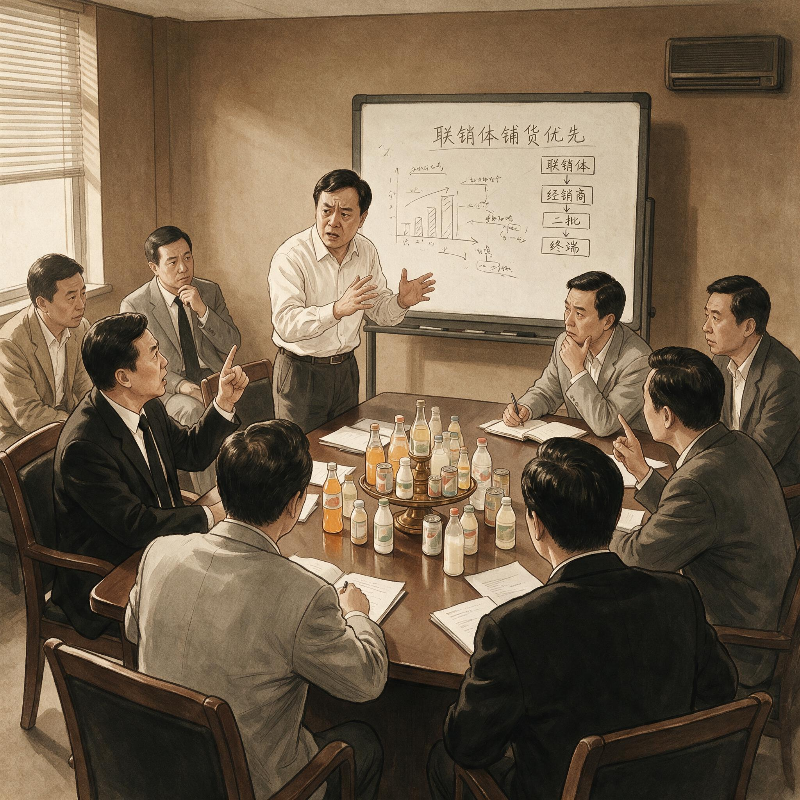

第 15 章
娃哈哈的路径锁定
把时钟拨回2015，回到瑞幸那套冷酷数字逻辑尚未诞生的年代。一款饮料能不能在娃哈哈体系里活下来，首先不取决于消费者是否愿意为它买单，而取决于联销体是否愿意为它铺货。这个顺序不是宗庆后晚年才形成的偏好，而是二十余年渠道建设的组织沉淀。那年前后的新品评审会上，这个顺序再次显形。一款气泡水概念被摆上桌面，配料方案接近后来市场熟悉的零糖气泡方向。
提案的产品经理还没讲完市场前景，渠道负责人先问了两个问题：经销商每箱能赚多少？和现有产品相比，终端店主的进货意愿靠什么保证？会场安静。

娃哈哈新品评审会场景示意
AI 生成插图，非史实影像。
产品经理试图把话题拉回消费者趋势，提到年轻用户对“零糖”和“气泡口感”的搜索热度正在上升。但评审桌上的问题没有跟着他走。
另一个大区负责人翻开材料，指着铺货周期一栏：新品进场要先做冰柜陈列，要付陈列费，要压首批货，联销体客户不会为一个没验证过的品类承担这些。何况2015年的便利店和社区超市里，气泡水还远没有后来那样的货架地位。方案最终被否。否掉的不是产品配方，而是渠道可行性。
宗庆后在会上没有说太多，但结论在他的判断体系里是现成的：渠道不接受，产品再好也走不下去。这个判断放在二十年前，甚至十年前，几乎没人能挑战。可当它再次出现在2015年的评审会上时，它已经不再是对市场的准确判断，而变成了一种组织反射。
理解这个反射，需要回到娃哈哈成为娃哈哈的那个过程。联销体不是一套简单的分销合同。它是一套权力结构、利益分配机制和认知过滤器的复合体。
上世纪九十年代，宗庆后以“保证金制度”重建了厂商与经销商的关系：经销商预先打款，娃哈哈保证区域独家供货和稳定返利。这个设计解决了一个当时中国食品饮料行业最致命的问题——货款拖欠和渠道失控。联销体把数万名经销商变成娃哈哈的外围部队，把下沉市场的货架变成宗庆后最可靠的堡垒。
这套机制的运行逻辑极其清晰：规模、周转、稳定。成熟单品如饮用水、营养快线、AD钙奶，是联销体最喜欢的货物。它们利润虽薄，但周转快、价格透明、不占库存。
经销商对这类产品有清晰预期：进了货卖得动，卖不完退货有保障，资金占用可计算。新品则意味着不确定性。首批货要压、终端要推、价格要守，如果动销不好，前面三样全变成库存和亏损。
产品销售数据上的差异，会进一步放大这种偏好。到了2010年代中后期，娃哈哈的成熟单品在联销体中的出货占比仍然极高。AD钙奶作为一个已经存在超过二十年的产品，在四级以下市场仍有稳定的动销。它的利润空间被压缩到了相当薄的程度，但胜在稳定。经销商用一个确定的小额利润，换取无需反复教育市场的低推销成本。
这种稳定在生意上未必不值得，但它同时在组织内部形成一个认知闭环：稳定等于好产品，波动等于坏产品。而这个稳定，并非消费者意义上对产品本身的评价，而是物流意义上的可预测性。
产品经理们在2015年前后感受到的，正是这个闭环的冷硬边界。一个在娃哈哈工作了十多年的产品经理，在提交新品方案前，往往已经被训练出一套自我审查机制。
他会先想渠道：这个产品几公斤、几平方米、多少瓶一箱、经销商每箱几块钱毛利、终端每瓶几块钱空间。他会先算账，再去想消费场景。他不是没有洞察力，而是洞察力必须经过一套渠道可行性的筛子。筛子的孔眼是固定的，过不去的想法在纸面上就被自己杀掉了。
问题在于，2015年的中国市场，已经不是孔眼还足够大的那个市场。线上渠道正在快速侵蚀下沉市场的传统分销优势。社区电商、外卖平台、直播带货，开始绕开联销体的多级批发体系，直接连接品牌和消费者。便利店体系在一二线城市密集扩张，货架面积小、品类更新快、更看重单品坪效而非大单品压货。连锁餐厅和茶饮店的自有饮品，在年轻人心中取代了部分瓶装饮料的饮用场景。消费者的决策依据，从“这瓶饮料是什么品类”转向“它有什么成分、适合什么场景、是否值得拍照”。
这个转折对娃哈哈的打击，不只是市场层面的。它动摇了联销体在下沉市场的绝对控制。过去，一个创新产品要抵达县乡消费者的冰箱货架，几乎只有通过经销商体系。
现在，一个年轻消费者可以在直播平台下单六瓶无糖气泡水，第二天直接送到家。联销体仍然庞大，但它不再是消费品抵达消费者的唯一通道。这个通道的分流，削弱了渠道驱动逻辑对整个市场结构的解释力。而娃哈哈的判断系统，仍然把联销体的接货意愿，等同于产品是否成立的最终测试。
同样是2015年前后，一些外部咨询公司做过品牌年轻化方案，提交给娃哈哈管理层。方案里通常会有几类建议：更换包装设计，引入低糖或无糖产品线，加大线上数字营销，重新定义AD钙奶的消费场景。有的方案直接建议，应该把资源从传统渠道促销中抽出一部分，投向便利店和电商平台，建立一套平行于联销体的新分销网络。
这些建议在内部会议上被讨论过。其中一位参与者回忆，每次讨论到最后，都会遇到同一个问题：新的渠道网络由谁来管理？按现有组织架构，区域经理和大区负责人管理的仍然是联销体客户。他们的奖金、指标、汇报关系都绑定在传统分销的出货数字上。
让他们分出一部分精力去培育电商或便利店渠道，本质上是让他们在自己的考核体系里背叛自己。这需要一个单独的团队、一套单独的指标、一种单独的能力。但这些单独的东西，在娃哈哈现有的组织架构里，没有位置。
在经销商那头，对高毛利新品的渴望同样真实存在。成熟单品利润太薄，尽管稳定，却不足以覆盖越来越高的仓储、物流和人员成本。一些县市级经销商向区域经理反映，AD钙奶一箱的毛利被压到了几块钱，而配送成本每年都在涨。
他们希望有高毛利新品，但他们又要求新品必须“不麻烦”。这个“不麻烦”包括：厂家给足陈列费用，给足人员支持，首批货可以部分退货，终端有自然动销能力，产品在目标消费者那里已经积累了一定的品牌声量。换句话说，经销商希望新品能把不确定部分提前解决掉，然后由他们来收割确定性收益。
这种双重要求，才是联销体在2010年代后期的真实处境。它不是一个理性的战略选择，而是一个利益网络在结构性压力下的应激反应。
每个节点都在试图降低自己的风险，但风险的降低以成本向厂家转移为实现方式。厂家则通过成熟单品来维持渠道的忠诚度，因为在资源有限的情况下，维护存量比培养增量更紧迫。于是，高毛利新品在内部获得真正推动力的概率，被财务测算绞杀在评审阶段。
2015年到2020年，娃哈哈推出过一系列新品试图突破。功能饮料、植物蛋白饮料、茶饮料、果汁、酸奶、咖啡，几乎每一个可能形成增量的品类都有产品上市。这些产品中的绝大多数，没有活过第三个完整销售年度。
有的在上市半年内就因为渠道动销不足而退出；有的在区域市场做了一轮推广后，因为铺货费用超支而被叫停；有的虽然留下了一定销量，但始终没有形成足以支撑独立品类地位的市场份额。它们都曾进入过联销体，但都没能让消费者记住自己。
外部的新物种正在沿着另一条路径生长。元气森林在2016年成立，早期以“无糖气泡水”切入了便利店和电商两个娃哈哈并不强势的场景。它的渠道逻辑与联销体完全相反：先进入小渠道，再反向倒逼传统流通渠道。
先在线下便利店形成排面，再让线上电商平台把复购和品牌声量做起来，最后由消费者需求去拉动经销商进货。这个次序倒置了娃哈哈的评审逻辑。元气森林先验证消费者是否想要它，再回答渠道是否接受它。
还不仅如此。元气森林在起步阶段，产品上市后的铺货节奏也不是全面压货，而是先做渗透率。它关注的指标，是目标消费者在便利店的单店动销、复购率和社交媒体上的主动提及。
这与娃哈哈内部的新品上市评估表几乎不共享任何一列。娃哈哈的报表仍然围绕出货量、回款额、经销商库存周转；而元气森林的报表围绕的是用户行为、场景触达和数字渠道的流量转化。
报表的差异，反映的不是哪一家更聪明，而是它们在各自的历史路径上，形成了对市场真实性的不同定义。这是路径锁定的核心：组织用来理解市场的工具，恰好也是限制组织看见市场的工具。
AD钙奶当年的品类占位成功，本来是一个清晰的定位案例。它在儿童营养饮品这个心智空位上，建立了超过二十年的消费者认知。
但成功的副产品，是娃哈哈内部把这个案例抽象成了一个更宽泛的战略信条：跟进策略。跟在已经被验证的品类后面，用渠道能力覆盖市场。AD钙奶之后，营养快线、爽歪歪、格瓦斯，都试图复制这条路径。有些产品确实成了，有些产品在短暂的辉煌后迅速萎缩。
这里需要正面回应一个更尖锐的反方解释：定位理论在中国市场被反复误读、改造甚至反噬，是否恰恰说明这个理论本身存在根本缺陷？如果它假设了一个静态、可垄断的心智市场，而中国市场的事实证明心智可以被轻易扰动，那么娃哈哈的困境是否根本不是执行偏差，而是理论前提的错误？
这个解释有力量，但它把问题的重心放错了地方。中国市场确实没有提供多少二十年不变的心智绿洲。AD钙奶本身也证明了这一点：即使它在儿童营养饮品这个品类占据了二十年的心智词汇，当消费者的购买驱动从“给小孩买什么饮料”转向“我自己在什么场景喝什么饮料”时，品类标签本身失去了购买驱动。
心智不是不可占据，而是它作为一块阵地，连接着使用场景、功能需求和身份表达。场景变了，心智阵地就开始迁移。定位理论需要应对的，从来不是心智的永久占据，而是企业在市场结构变化时，是否有能力重新定义心智锚点。
娃哈哈的问题，不在于它相信可以占据一个心智位置，而在于它在占据之后，把这个位置本身当成了资产，而不是负债。联销体作为心智占位的执行工具，从能力变成了锁链。
更进一步说，不是定位理论错了，而是娃哈哈把定位理论的经验教训，转化成了一个僵化的组织记忆——只有渠道驱动的品类占位，才能带来确定性收益。这个记忆在1995年是对的，在2005年仍然部分有效，但到了2015年，它已经在过滤掉所有要求组织作出非连续性改变的信息。
一个更具体的机制在于财务激励。娃哈哈的核心业务人员，无论是大区经理还是区域销售主管，收入的大头来自联销体客户的回款提成。在一个稳定体系里，这意味着推动成熟单品是最优选择。
推动新品则意味着要先把客户关系维护好，把首批货压下去，把售后风险扛住。新品即使消费者端做得不错，要转化成可观的回款，也需要至少两到三个完整销售周期。而两到三个销售周期之后，负责这个新品的销售主管可能已经轮到另一个区域。在这个时间错配里，推动新品的人在财务上是吃亏的。这种吃亏未必会写在制度文件里，但每个人都算得过来。
于是组织在正式制度之外，形成了一套隐性规则：做新品，是给后面的人铺路；做老品，才是给自己挣钱。
这个规则解释了为什么新品失败不能简单归因于“产品不行”。产品本身也许有缺陷，但大部分新品死于资源投入的衰减和持续性不足。它们得不到足够的终端陈列支持，得不到销售团队的持续推动，得不到经销商在一段足够长的时间里的耐心。每一个原因，都能追溯到联销体的激励结构，而不是某一个具体人员在决策上的低能。
群像并置之下，产品经理的挫败、经销商的矛盾、咨询方案的搁浅，甚至宗庆后本人的否决，都指向同一个结构事实：这个组织已经被自己的成功工具捆住了手脚。2015年到2020年，娃哈哈新品的存活数据比其他阶段更难看。五年间上市的新品数量在数十款以上，但能够稳定存活并在总营收中占有一席之地的，远低于同期中国饮料行业创新的平均成功率。
当然，行业平均成功率本身就不高，但更麻烦的是，这些新品几乎没有改变娃哈哈的收入结构。成熟单品仍然贡献了营收的大头，尤其是饮用水和AD钙奶。新品的份额占比被挤压在个位数区间，有些年份甚至因为渠道退货和费用冲减，新品对全年利润的实际贡献为负。
而渠道正在从一个地方性事实，变成一个全国性的事实。2015年之前，电商对瓶装饮料的渗透有限，因为饮料的即时消费属性和物流成本让它天然更适合线下。但2015年之后，快递基础设施的改善和前置仓模式的成熟，正在改变这个前提。
线上购买饮料的成本迅速下降，尤其对于计划性消费场景——整箱购买、办公室储备、家庭囤货——电商的效率开始超过传统渠道。娃哈哈的下沉市场壁垒，本来建立在物流上的物理优势。一旦这个优势被线上平台和新型零售设施侵蚀，壁垒就开始从底部松动。
便利店和连锁小业态也在下沉。2010年代中期之后，便利店不再只是一线城市的风景。连锁便利店品牌开始进入二三级市场，甚至在部分县城中心区域形成了对传统夫妻老婆店的分流。
对于一个想要全国化成长的新品牌，不一定非要从县乡市场一层一层铺下去。它可以从一二线城市建立势能，然后借助电商和短视频，把声量扩散到低线城市，最后倒逼经销商主动找上门来。
元气森林走通了这条路，而娃哈哈的评审逻辑里，这条路径被排除在制度理性之外。
宗庆后并非看不到便利店和电商的崛起。他也不是没有用过智能手机。把他晚年的选择归因于“看不懂互联网”，是一种观察上的懒惰。更符合事实的解释是，他手里唯一仍然有效的工具，是联销体。
围绕这个工具建立起来的整个组织，包括销售队伍、经销商网络、生产计划体系，甚至供应商关系，都已经为渠道驱动的产品策略做过了优化。任何要求他放弃这个工具的建议，在内部都不只是战略分歧，而是对整个组织能力结构的质疑。宗庆后不可能按下一个按钮，让娃哈哈变成元气森林，因为在娃哈哈内部，没有一个元气森林那样的组织单元。
这就是能力-战略互锁机制。早期优势塑造了组织能力，组织能力固化了战略判断，战略判断又反过来维护早期优势。这个互锁不断循环，以至于当市场结构发生剧烈变化时，组织不是没有反应，而是反应的方向始终被锁定在原有的路径上。
增加新品是反应，但这些新品仍然通过联销体出货；品牌年轻化是反应，但预算仍然优先保证传统渠道促销；进入线上渠道是反应，但线上部门的考核仍然以全网出货回款为主。
每一个局部动作都在试图应对变化，但每一个动作都被组织记忆拉回到渠道驱动的逻辑轨道上。产品经理的挫败在这里达到了最深的层次。
他们发现，在会议桌上否定一个方案的，不是宗庆后一个人的判断，而是整个评审机制背后的隐形评委。这个隐形评委由数千名经销商、数百名区域经理、几十个大区负责人构成，他们的利益诉求被织入了一张几乎不可推翻的财务测算表中。产品经理要做成一支新品，就必须同时说服这些人相信，这支新品不会破坏他们现有的工作秩序。但一个真正具有破坏性的创新，恰恰意味着秩序的重建。于是，真正有突破性的产品方案，在进入正式评审之前，就已经被一种集体无意识排除掉了。
经销商眼中的路径锁定，呈现为另一种形态。他们对高毛利新品的渴望，并不是对改变体系的渴望。相反，他们希望的是在体系不变的前提下，获得一个新的利润增长点。
当厂商真的推出新品时，经销商首先关心的是：首批货能退多少，陈列费能给多少，终端促销活动厂家能出多少人。他们想要创新，但不想要风险。当风险与创新不可分割时，他们就会退回存量，停在AD钙奶的稳定动销里，一边抱怨利润太薄，一边拒绝为新品付出额外成本。
这种矛盾不是虚伪，而是一种在既定利益框架中的理性选择。每一个经销商在自己的账本上，都没有做错。
外部咨询公司的品牌年轻化方案，则提供了第三种视角。咨询师们通常从消费者出发，做出漂亮的趋势分析和竞品对标，但他们低估了娃哈哈内部渠道逻辑的排斥力。他们的方案被要求适配现有渠道体系，适配区域销售团队的作业习惯，适配经销商的利润模型。适配到最后，原本激进的年轻化方案变成了一份温和的包装升级建议。
一个长期研究中国消费品的咨询顾问后来总结道：在娃哈哈，“不是消费者不投票”，而是消费者没有坐在评审会上。
“这三种视角并置”，拼出了一幅完整的路径锁定图景。“产品经理看到了组织内部的过滤机制”，却无法改变它；“经销商看到了利润结构的问题”，却不愿承担改变的成本；“咨询公司看到了正确的方向”，却没有进入决策核心的权力。
“它们都指向同一个结果”：娃哈哈的创新，在2015年到2020年之间，“始终是一场没有真正开始过的变革”。“市场没有等它”。
2018年之后，“元气森林”的营收增长开始呈指数曲线。“它在便利店渠道”的渗透率快速攀升，“在电商平台”的复购率和搜索热度同时上扬。“年轻消费者把零糖气泡水变成一种社交货币”，一个新的品类词汇迅速形成。“这个词汇的形成”，不是通过广告轰炸，“而是通过场景中的真实消费和社交媒体上的主动传播”。
“它的成长逻辑几乎完全是娃哈哈评审逻辑的反面”：先有用户，“再谈渠道”；先有场景，“再谈铺货”；先有心智，“再谈回款”。
“AD钙奶”的消费者还在，“但他们在变老”。“新一代年轻的父母”，不再把孩子喝什么饮料与AD钙奶自动关联。“他们看配料表”，看糖含量，“看是否含乳”，看是否适合运动后补充。“他们的购买决策”，不再被“儿童营养饮品”这个品类标签驱动，“而是被成分和场景的信息重构”。
“AD钙奶成了一个怀旧符号”，而不是一个持续成长的基础品类。“怀旧能带来短期反弹”，却支撑不了长期增长。“2020年之前”，娃哈哈也做过AD钙奶的联名款、“大瓶装”、“礼盒装”，这些动作短期内拉动过销量，“却没能改变它在消费者心智中的老化趋势”。
2019年底到2020年初，“新冠疫情暴发后”，市场环境再次撕裂。“线下零售流量大幅波动”，联销体的物理网络优势进一步被削弱，“而线上和社区零售”的效率被重新发现。“娃哈哈”的渠道反应仍然迟缓。
“它在疫情期间推出了一些新的健康概念饮品”，但市场反馈平平。“这些产品大多仍然通过传统经销商仓库完成铺货”，而疫情下的小店主更依赖平台一站式补货和社区团购的集中配送。“那些不再经过联销体的商品流”，像水从裂缝中渗走，“一点一点地改变了地面上的河流走向”。
“到了2020年底”，一组对比数据已经很说明问题。“2015年至2020年”，娃哈哈推出的新品数量在行业公开信息中可见的至少有几十款，“但其中能够在市场上持续销售超过三年的”，所占比例低到可以忽略。“这些新品的销售收入”，在娃哈哈总营收中的占比始终没有突破两位数，“有些年份甚至低于5%”。
“换句话说”，娃哈哈的规模仍然建立在1990年代和2000年代建立的产能、“渠道和单品之上”。“它的创新没有改变它的收入结构”，反而消耗掉了大量组织资源和渠道耐心。
“同一时期”，以元气森林为代表的新品牌，“在线上渠道和年轻消费者中的份额持续增长”。“2018年到2020年”，元气森林在无糖气泡水品类的市场占有率一路攀升，“其单渠道单店”的动销数据在多个便利店系统里超过了不少传统饮料巨头。“它用几年时间”，在娃哈哈最不擅长也最不愿冒风险投入的场景中，“立起了一个全新的品类堡垒”。“这个堡垒不依托联销体”，不依赖县乡市场的多级分销，“而是附着在便利店冷柜”、“电商货架和社交媒体的内容流里”。
冷峻的数字收束了判断。“2015年到2020年”，娃哈哈推出的新品数量过百，“存活超过三年的不到十款”，新品在总营收中的占比始终难以突破一成。“联销体贡献”的营收比例仍然高企，“但其厚度和密度出现了明显松动”。“县域市场的货架还在”，但货架前的消费者已经开始改变选择。“联销体不再是一道不可逾越的护城河”，它更像一张越来越沉重的网，“网住了娃哈哈自己”。“路径锁定”的代价，“正在被市场一笔一笔地清算”。